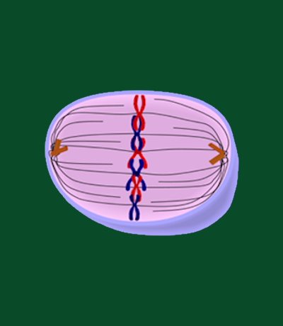

Metaphase stands as a pivotal stage within the intricate process of mitosis, following prometaphase and
preceding the dynamic events of anaphase. This stage is characterized by the alignment of condensed
chromosomes along the equatorial plane of the cell, forming a metaphase plate. The mitotic spindle, a
structure composed of microtubules emanating from opposing centrosomes, plays a central role in this
alignment process. The microtubules attach to the centromeres of each chromosome, creating a tense
equilibrium that ensures precise positioning before the subsequent separation.
The orchestration of chromosome alignment during metaphase is crucial for the accurate distribution of
genetic material to the daughter cells. The metaphase plate, a symmetrically positioned alignment of
chromosomes, ensures that each daughter cell will receive an identical set of chromosomes. The cell
enforces a regulatory checkpoint during metaphase, known as the spindle checkpoint, which monitors the
proper attachment of microtubules to each chromosome. Only when this attachment is secure and
chromosomes are correctly aligned does the cell receive the signal to progress to anaphase, marking a
pivotal point in ensuring the fidelity of cell division.
The visual spectacle of metaphase, with chromosomes forming a distinct and orderly array along the
metaphase plate, serves as a testament to the precision and complexity of mitotic processes. This
alignment, orchestrated by the mitotic spindle and regulated by the spindle checkpoint, sets the stage
for the subsequent separation of chromatids and the equitable distribution of genetic material during
the ensuing stages of mitosis. In essence, metaphase represents a crucial checkpoint in the cell cycle,
ensuring the accurate segregation of chromosomes and the faithful transmission of genetic information to
the next generation of cells.
